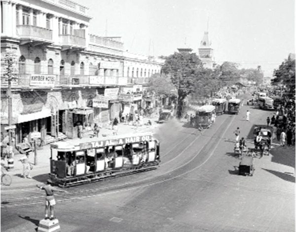
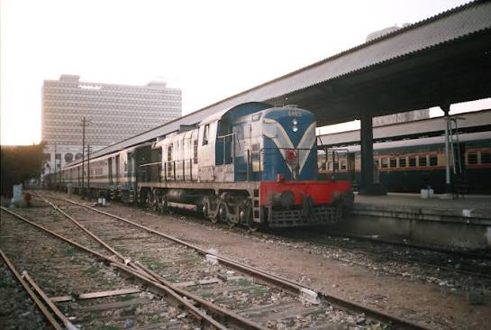
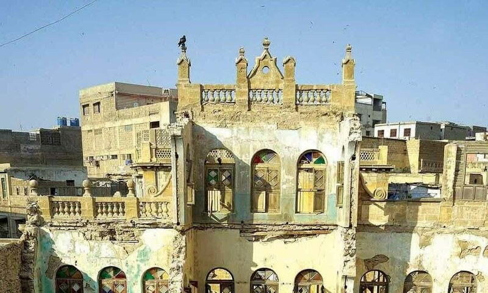

Lost Places
Some parts of Karachi's past have faded away or been left behind. Here are a few of them.

Karachi Trams
Trams ran on the streets of Karachi from 1884 until 1975. Today only a few old tracks and memories remain.

Karachi Circular Railway
A train line that circled the city and carried thousands of commuters. It started in 1964 and stopped running by 1999. Parts of the track are still visible.

Neglected Heritage Buildings
Some old buildings around the city center are in poor condition and need repair. Without care, they may be lost for good.
Saving a place starts with remembering it.